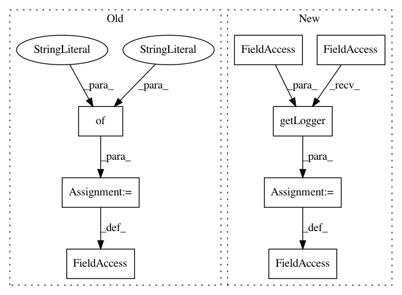

8bc74a2c9f87674990ace81818ecac2ea9016ac9,src/sdk/pynni/nni/compression/torch/speedup/infer_shape.py,,,#,213
Before Change
Infer output and weight shape of a module/function from its input shape
infer_from_inshape = {
"ReLU": lambda module_masks, mask: relu_inshape(module_masks, mask),
"ReLU6": lambda module_masks, mask: relu_inshape(module_masks, mask),
"Sigmoid": lambda module_masks, mask: relu_inshape(module_masks, mask),
"aten::relu": lambda module_masks, mask: relu_inshape(module_masks, mask),
"aten::tanh": lambda module_masks, mask: relu_inshape(module_masks, mask),
"aten::tanh_": lambda module_masks, mask: relu_inshape(module_masks, mask),
"aten::hardtanh": lambda module_masks, mask: relu_inshape(module_masks, mask),
"aten::hardtanh_": lambda module_masks, mask: relu_inshape(module_masks, mask),
"aten::relu_": lambda module_masks, mask: relu_inshape(module_masks, mask),
"aten::sigmoid": lambda module_masks, mask: relu_inshape(module_masks, mask),
"Conv2d": lambda module_masks, mask: conv2d_inshape(module_masks, mask),
"MaxPool2d": lambda module_masks, mask: maxpool2d_inshape(module_masks, mask),
"aten::max_pool2d": lambda module_masks, mask: maxpool2d_inshape(module_masks, mask),
"aten::avg_pool2d": lambda module_masks, mask: maxpool2d_inshape(module_masks, mask),
"aten::adaptive_avg_pool2d": lambda module_masks, mask: maxpool2d_inshape(module_masks, mask),
"AvgPool2d": lambda module_masks, mask: maxpool2d_inshape(module_masks, mask),
"AdaptiveAvgPool2d": lambda module_masks, mask: maxpool2d_inshape(module_masks, mask),
"aten::size": lambda module_masks, mask: size_inshape(module_masks, mask),
"aten::view": lambda module_masks, mask, shape: view_inshape(module_masks, mask, shape),
"aten::reshape": lambda module_masks, mask, shape: view_inshape(module_masks, mask, shape),
// support only start_dim=1
"aten::flatten": lambda module_masks, mask, shape: view_inshape(module_masks, mask, shape),
"Linear": lambda module_masks, mask: linear_inshape(module_masks, mask),
"BatchNorm2d": lambda module_masks, mask: batchnorm2d_inshape(module_masks, mask),
"aten::add_": lambda module_masks, mask: add_inshape(module_masks, mask),
"aten::add": lambda module_mask, mask: add_inshape(module_mask, mask),
// mul has the similar behaviour with add, they both request
// the input tesors to have the same shape
"aten::mul": lambda module_mask, mask: add_inshape(module_mask, mask),
"aten::mul_": lambda module_mask, mask: add_inshape(module_mask, mask),
"aten::cat": lambda module_mask, mask, cat_info, last_visited: cat_inshape(module_mask, mask, cat_info, last_visited),
"aten::mean": lambda module_masks, mask, shape: mean_inshape(module_masks, mask, shape),
"Dropout": lambda module_masks, mask: dropout_inshape(module_masks, mask),
"Dropout2d": lambda module_masks, mask: dropout_inshape(module_masks, mask),
"aten::dropout": lambda module_masks, mask: dropout_inshape(module_masks, mask)
}
Infer input and weight shape of a module/function from its output shape
After Change
import logging
import torch
_logger = logging.getLogger(__name__)
conv_prune_dim = -1
def set_conv_prune_dim(dim):
In pattern: SUPERPATTERN
Frequency: 4
Non-data size: 8
Instances
Project Name: Microsoft/nni
Commit Name: 8bc74a2c9f87674990ace81818ecac2ea9016ac9
Time: 2020-10-09
Author: 38930155+chicm-ms@users.noreply.github.com
File Name: src/sdk/pynni/nni/compression/torch/speedup/infer_shape.py
Class Name:
Method Name:
Project Name: analysiscenter/batchflow
Commit Name: 1eef041ef8d9d7d39abbb10c622bcc19f46e63db
Time: 2019-08-19
Author: Tsimfer.SA@gazprom-neft.ru
File Name: batchflow/models/tf/layers/conv_block.py
Class Name:
Method Name:
Project Name: pantsbuild/pants
Commit Name: aa6e1a406eccc4865878b101c9a0163e70a57816
Time: 2020-08-23
Author: 14852634+Eric-Arellano@users.noreply.github.com
File Name: src/python/pants/engine/desktop.py
Class Name:
Method Name:
Project Name: pantsbuild/pants
Commit Name: 29ccf189107602444a6475a89d67fca62fc8e84f
Time: 2020-08-28
Author: 14852634+Eric-Arellano@users.noreply.github.com
File Name: src/python/pants/engine/desktop.py
Class Name:
Method Name: